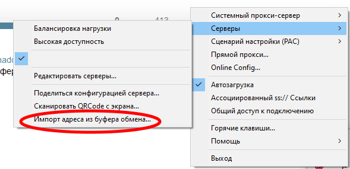

| Ник | Пост | Дата |
|---|---|---|
| Colourban(Colourban) | ValdikSS, или может ещё кто из грамотных IT-шников, никаких вариантов борьбы с последними механизмами подавления свободы Роскомнадзором не появилось? | 2022-06-06T10:04:55.104Z |
| zhenyolka | А Goodbyedpi не пользовались? Под windows он отлично работает. Автор Valdikss. Лучше всего подойдет запуск с ключом -6. За основу стоит взять файл service_install_russia_blacklist_dnsredir.cmd. | 2022-06-06T10:50:51.582Z |
| Colourban(Colourban) | zhenyolka, Goodbyedpi, это где? Мне прилично за 60 и я ни разу не IT-шник в прошлом. Мне необходимо, чтобы понятно было, что делать, на самом примитивном уровне. | 2022-06-06T10:59:00.398Z |
| Colourban(Colourban) | Сейчас перекинул Ваш совет сыну, Он ввиду возраста пограмотнее меня в этих вопросах. Пишет у него не получилось. Вроде всё сделал, запустил с ключом -6, но нигде ничего не отрывается. Жаль. | 2022-06-06T11:22:16.294Z |
| Colourban(Colourban) | ValdikSS, прошу извинить, по неграмотности ввёл в заблуждение. Удалось связаться с админом сайта «Fantasy Worlds» ( Бесплатная электронная библиотека фэнтези и фантастики. ). Он что-то там у себя подкрутил, и библиотека начала открываться и позволять скачивать и загружать книги через прокси сайта «Антизапрет», как раньше (иногда подсбаивает, но в целом работало и работает нормально). «Буквавед», правда не открывается, но он и раньше через Антизапрет открывался лишь эпизодически (тоже, наверное, что-то с конфигурацией на сервере, хотя через VPN, когда они работали, открывался стабильно). | 2022-06-07T10:26:02.059Z |
| vanyaindigo | Вам с компьютера надо или с телефона? | 2022-06-07T10:32:20.596Z |
| Colourban(Colourban) | Комп. Windows 7 | 2022-06-07T10:37:07.360Z |
| vanyaindigo | Скачиваете клиент Shadowsocks, распаковываете в папку и запускаете. Затем идете в Телеграм, в этот канал, копируете в буфер адресную строку, начинающуюся с ss:// с любой понравившейся страной.  Идете в Серверы и жмете “Импорт адреса из буфера обмена…” Потом открываете ваши сайты. | 2022-06-07T10:49:24.479Z |
| Colourban(Colourban) | vanyaindigo, попробую. Большое спасибо! Только мне бы не с Firefox’ом это проделать, а с Оперой или Хромом. Лиса у меня, как я писал выше, пока более-менее работает через прокси Антизапрет. В общем, буду пробовать. Ещё раз спасибо! | 2022-06-07T11:30:32.910Z |
{kind=link}